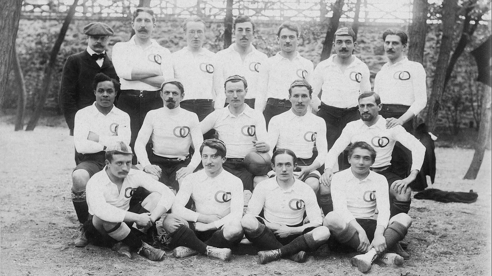

Constantin HenriquezPort-au-Prince, 1880
1er
JEUX OLYMPIQUES
1RE FOIS

Équipe de France de rugby, 1900Constantin Henriquez
FRANCE27 – 17ALLEMAGNE
FRANCE27 – 8GDE-BRETAGNE
Jesse OwensÉtats-Unis · Berlin 1936
HaïtienChampion olympique, 1900
Henriquez · 1900Owens · 1936
OUI
NON